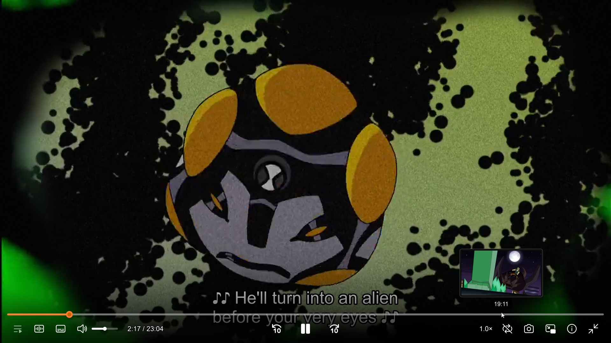
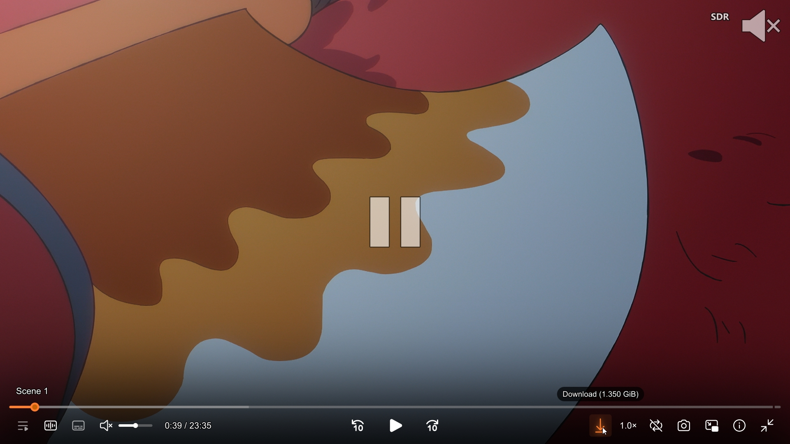
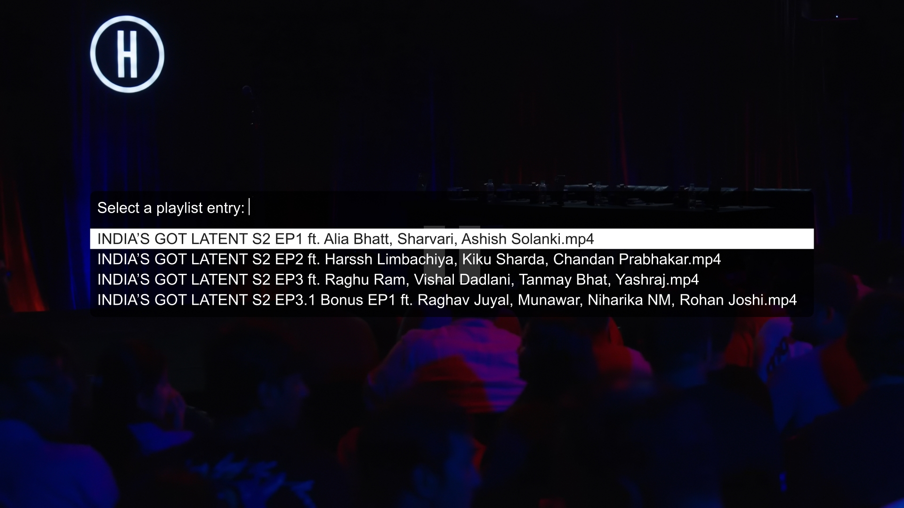
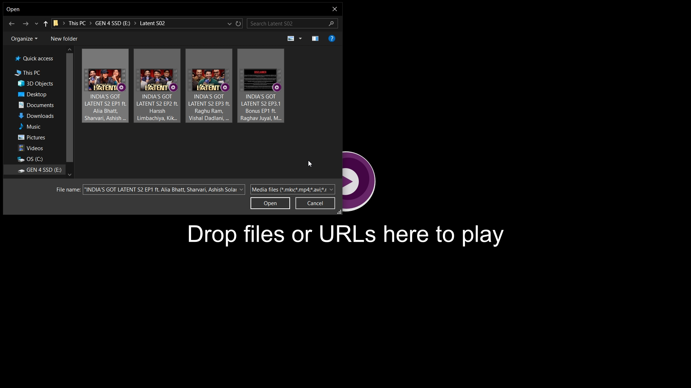
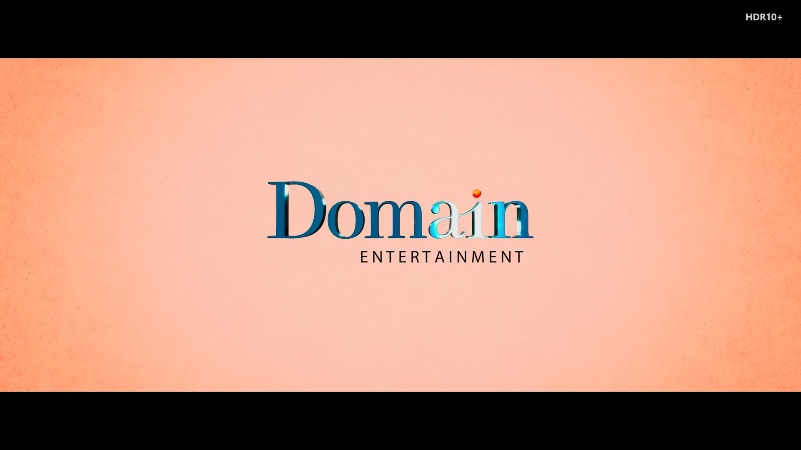
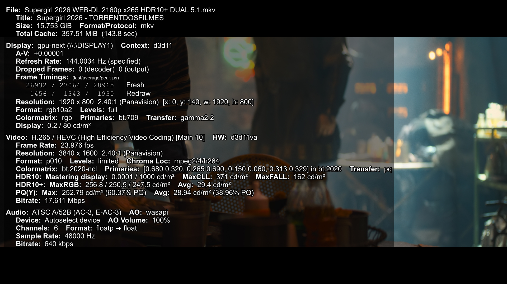
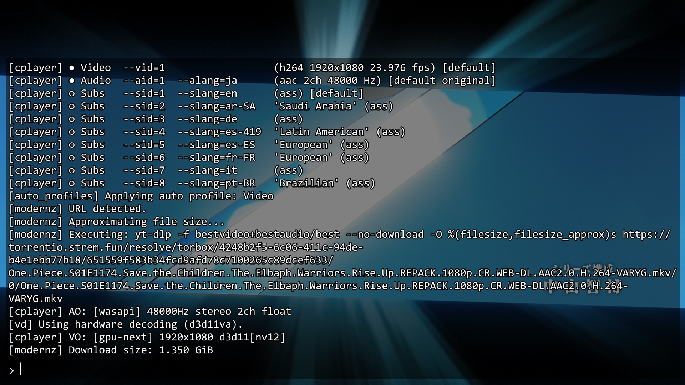

A high-fidelity, production-grade configuration for mpv. Featuring GPU-accelerated libplacebo rendering, dynamic HDR10 & Dolby Vision tone-mapping, ModernZ Fluent controller, real-time seekbar thumbnails, and natural playlist sorting.
git clone https://github.com/Biraj2004/biraj-mpv-conf.git

A balanced configuration combining cutting-edge video decoding, audio dynamics, and minimalist user experience.
Powered by vo=gpu-next with libplacebo, Direct3D11 flip presentation (d3d11-flip=yes), borderless fullscreen (d3d11-exclusive-fs=no) for flicker-free fixed refresh rate & 0ms instant Alt-Tab, and debanding.
Dynamically tone-maps HDR10 and Dolby Vision (Profiles 5 & 8) to SDR on standard displays without washed-out colors. Flawless 0 frame drops on standard files; heavy 60GB+ dual-layer Blu-ray REMUX files stabilize with minor initial buffering and some loss of frames.
Dropping or opening multiple episodes automatically sorts them in natural alphanumeric sequence (E1 → E2 → E10). Preserves playback of the clicked episode seamlessly.
Integrated with thumbfast to provide real-time, zero-lag visual preview thumbnails while hovering or scrubbing along the seekbar.
Configured with 50px typography, 1.8px crisp outline, 1.5px translucent drop shadow, modern libass geometry passing (sub-ass-use-video-data=all), and sub-ass-override=no to preserve anime opening/ending top lyrics ({\an8}) and signs.
One-key dynamic audio normalizer (dynaudnorm) via y to balance quiet dialogue and loud explosion effects during late-night viewing.
Integrated with yt-dlp prioritizing 1440p 2K → 1080p Full HD → 720p HD. Supports cookie authentication for full 1080p/1440p YouTube streaming.
Optimized cache (450MB forward, 225MB back-buffer, 30s readahead, disk caching fallback, and auto-pause buffer recovery) ensures instantaneous seeking with zero lag on 4K media and network streams.
Click on any screenshot to view full resolution.

Fluent vector icons, dark translucent seekbar, action-based interactive triggers (YouTube/VLC standard), and minimalist state-based center pause indicator.

Natural alphanumeric ascending sort ensures episodes appear in perfect numerical sequence.

Full Unicode support handles curly quotes, apostrophes, and non-ASCII filenames seamlessly.

Announces detected color format (DV, HDR10+, HDR, HLG, SDR) in the top-right corner.

Instant monitoring of decoder, framerates, target brightness nits, and cache status.

Built-in command prompt to inspect yt-dlp format streams, codecs, and decoder status.
Follow the simple steps below for your operating system.
This configuration is tuned for modern gpu-next, libplacebo, and HDR tone-mapping features provided by zhongfly's Windows git builds.
Download the latest configuration zip package and extract its contents.
Download ZIPPress Win + R, paste the following path into the Run box, and press Enter:
%APPDATA%\mpv
C:\Users\<YourUsername>\AppData\Roaming\mpv
Copy all extracted files and folders (mpv.conf, input.conf, menu.conf, scripts/, script-opts/, fonts/) directly into that folder.
C:\Users\<YourUsername>\AppData\Roaming\mpv\
├── mpv.conf
├── input.conf
├── menu.conf
├── fonts\
│ └── modernz-icons.ttf
├── scripts\
│ ├── cycle_audio.lua
│ ├── hdr_badge.lua
│ ├── modernz.lua
│ ├── open-file.lua
│ ├── pause_indicator_lite.lua
│ ├── sort_playlist.lua
│ └── thumbfast.lua
└── script-opts\
├── hdr_badge.conf
├── modernz.conf
├── pause_indicator_lite.conf
└── thumbfast.conf
Alternatively, open PowerShell and run this one-line command to install or update automatically:
irm https://raw.githubusercontent.com/Biraj2004/biraj-mpv-conf/main/install.ps1 | iex
Run the following commands in your terminal:
git clone https://github.com/Biraj2004/biraj-mpv-conf.git ~/.config/mpv
Open Terminal and clone the repository directly into your user config folder:
git clone https://github.com/Biraj2004/biraj-mpv-conf.git ~/.config/mpv
Search or filter through all essential playback shortcuts.
| Shortcut Key | Action & Description | Category |
|---|---|---|
| Space | Toggle Play / Pause | Playback |
| → / ← | Seek forward / backward 6 seconds (exact with OSD bar) | Playback |
| Media Fwd / Media Rew | Seek forward / backward 15 seconds (exact) | Playback |
| Home | Seek to beginning of media (0s) | Playback |
| . / , | Frame-step forward / backward | Playback |
| n / p | Next / Previous playlist item | Playback |
| k | Open interactive playlist selection menu | Playlist |
| Shift + k (or K) | Sort active playlist in natural alphanumeric ascending order (with OSD feedback) | Playlist |
| q | Quit mpv (remembers watch history & playback position) | Playback |
| b / Shift + b (or _ / #) | Cycle audio tracks forward / backward (VLC & MPV standard, zero-lag debounced) | Audio |
| y | Toggle Night Mode Audio Normalization (dynaudnorm) |
Audio |
| ↑ / ↓ | Volume up / down (±5%) | Audio |
| m | Toggle Mute on / off | Audio |
| Ctrl + a | Open Native File Dialog to add secondary Audio track | Audio |
| v / Shift + v (or j / J) | Cycle subtitle tracks forward / backward (VLC & MPV standard, includes Off/None, zero-lag) | Subtitles |
| r | Raise subtitle position up (sub-pos -1) |
Subtitles |
| t | Move subtitle position down (sub-pos +1) |
Subtitles |
| Ctrl + s | Open Native File Dialog to attach Subtitle track | Subtitles |
| Ctrl + y | Cycle Stream Quality (720p → 1080p → 1440p → Best) | Streaming |
| l | Toggle Dynamic HDR / DV Format Badge | Video |
| i | Toggle Real-Time Performance & Dropped Frame Statistics | Video |
| s | Take Screenshot (saved to ~/Pictures/MPV-Screenshots/) |
Video |
| f / Double Click | Toggle Fullscreen | Window |
| Esc | Exit Fullscreen | Window |
| Tab | Toggle ModernZ OSC visibility | Window |
| Right Click / g m | Open Rich Context Menu | Window |
| Ctrl + o | Open Native Windows Media Picker (with natural ascending sort) | Window |
Examine the exact parameter values configured in mpv.conf.
### Video Pipeline
vo=gpu-next
gpu-context=auto
d3d11-flip=yes
d3d11-exclusive-fs=no
hwdec=auto-safe
hwdec-extra-frames=16
deband=yes
temporal-dither=yes
sigmoid-upscaling=yes
correct-downscaling=yes
### HDR & Dolby Vision
target-colorspace-hint=yes
tone-mapping=auto
hdr-compute-peak=auto
gamut-mapping-mode=auto
### Audio Pipeline (150ms WASAPI Lock)
audio-buffer=0.15
audio-stream-silence=yes
audio-wait-open=0
audio-pitch-correction=yes
### Cache (450MB forward / 225MB back-buffer / 30s readahead)
cache=yes
cache-on-disk=yes
demuxer-max-bytes=450MiB
demuxer-max-back-bytes=225MiB
demuxer-readahead-secs=30
demuxer-seekable-cache=yes
cache-pause=yes
cache-pause-initial=no
cache-pause-wait=3### Subtitles
sub-auto=fuzzy
blend-subtitles=no
sub-hdr-peak=150
image-subs-hdr-peak=150
sid=no
demuxer-mkv-subtitle-preroll=no
embeddedfonts=yes
sub-ass-use-video-data=all
sub-fix-timing=no
sub-use-margins=no
sub-ass-force-margins=no
sub-ass-override=no
sub-font-size=50
sub-color="#FFFFFF"
sub-border-size=1.8
sub-border-color="#000000"
sub-shadow-offset=1.5
sub-shadow-color=0/0/0/0.5
sub-border-style=outline-and-shadow
sub-margin-y=36All shader pipelines, tone-mapping curves, and real-time playback profiles were verified on this reference configuration:
Recognizing custom developments and the broader open-source multimedia community.
Original author, curator, and maintainer of this configuration suite. Custom developed features and scripts include:
cycle_audio.lua — Zero-lag audio & subtitle cycler supporting both VLC and MPV standard shortcuts with 0ms visual OSD feedback, 25ms anti-spam debouncing, type-safety, and seamless GUI menu synchronization.sort_playlist.lua — Natural ascending playlist sorter algorithm with zero-stutter background reordering and OSD notifications.hdr_badge.lua — Dynamic floating format badge overlay automatically detecting and announcing HDR10+, Dolby Vision, HDR, HLG, and SDR formats.open-file.lua) — PowerShell UTF-8 standard output encoding fix to support curly quotes, apostrophes, and accented symbols in media paths.gpu-next libplacebo tone-mapping pipeline, and tailored 50px high-contrast subtitle typography.Built upon and integrated with the exceptional work of open-source projects:
gpu-next, libplacebo, and Direct3D11/Vulkan support.